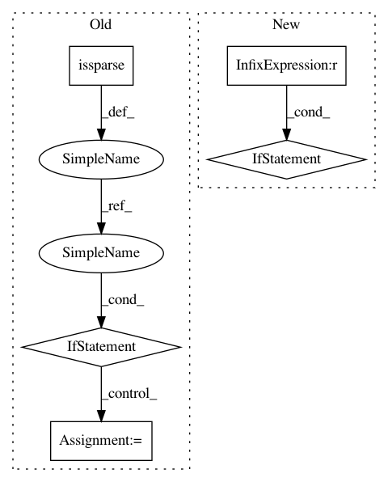

b912ae50a0ca1766eceb062973e2952997285fac,Python/phate/phate.py,PHATE,von_neumann_entropy,#PHATE#Any#,456
Before Change
raise NotFittedError("This PHATE instance is not fitted yet. Call "
""fit" with appropriate arguments before "
"using this method.")
is_sparse = sparse.issparse(self.gs_ker)
diff_aff = np.power(self.gs_ker.sum(axis=0), 1 / 2)
if is_sparse:
diff_aff = sparse.diags(np.array(diff_aff)[0])
else:
diff_aff = np.diagflat(diff_aff)
diff_aff = diff_aff @ self.gs_ker @ diff_aff
diff_aff = (diff_aff + diff_aff.T) / 2
if is_sparse:
After Change
raise NotFittedError("This PHATE instance is not fitted yet. Call "
""fit" with appropriate arguments before "
"using this method.")
if self.landmark_transitions is not None:
// landmark operator is doing diffusion twice
t_max = np.floor(t_max / 2).astype(np.int16)
_, eigenvalues, _ = svd(self.diff_op)
entropy = []
eigenvalues_t = np.copy(eigenvalues)
for _ in range(t_max):
In pattern: SUPERPATTERN
Frequency: 3
Non-data size: 5
Instances
Project Name: KrishnaswamyLab/PHATE
Commit Name: b912ae50a0ca1766eceb062973e2952997285fac
Time: 2018-04-04
Author: scottgigante@gmail.com
File Name: Python/phate/phate.py
Class Name: PHATE
Method Name: von_neumann_entropy
Project Name: ClimbsRocks/auto_ml
Commit Name: 019f0c822cd8f2833d3b25855f2df99cd5a465a4
Time: 2017-08-17
Author: ClimbsBytes@gmail.com
File Name: auto_ml/utils_model_training.py
Class Name: FinalModelATC
Method Name: fit
Project Name: KrishnaswamyLab/PHATE
Commit Name: b912ae50a0ca1766eceb062973e2952997285fac
Time: 2018-04-04
Author: scottgigante@gmail.com
File Name: Python/phate/phate.py
Class Name: PHATE
Method Name: von_neumann_entropy
Project Name: pavlin-policar/openTSNE
Commit Name: bbd23bd155dcae9f44979be07e781d0061f760b1
Time: 2020-10-20
Author: dmitry.kobak@neuro.fchampalimaud.org
File Name: openTSNE/nearest_neighbors.py
Class Name: NNDescent
Method Name: build